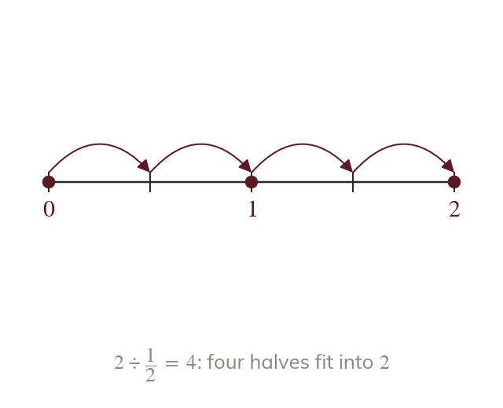

How many fit
Dividing asks how many of the divisor fit into the dividend. Dividing by a fraction less than gives a bigger answer.
Dividing asks how many of the divisor fit into the dividend. Dividing by a fraction less than gives a bigger answer, because a small piece fits many times.